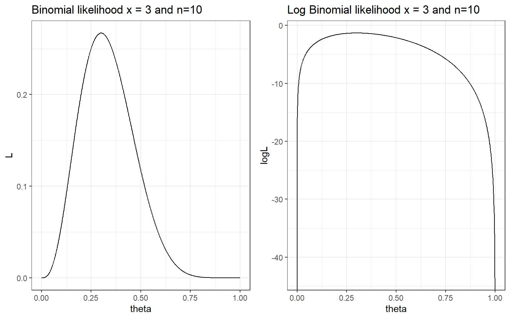
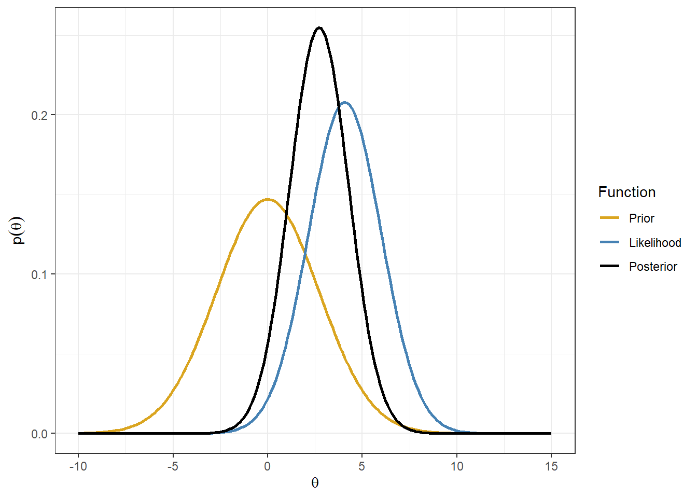
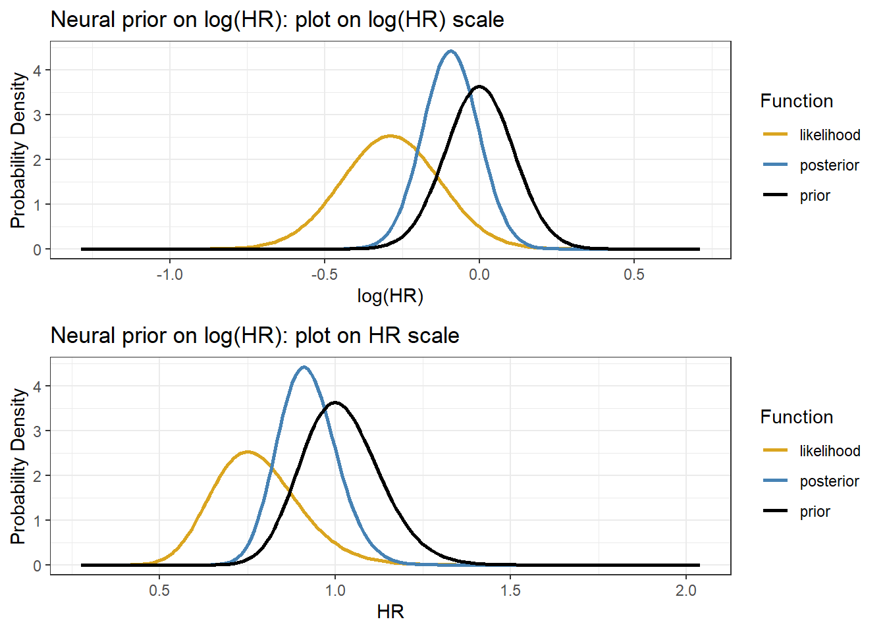

Session 3 Introduction to Bayesian inference
- Review of frequentist inferential approaches
- Introduce Bayesian inference
- Learn two simple Bayesian models (Beta-binomial & normal-normal)
- Discuss practical advantages and disadvantages of Bayesian approach
3.1 Classical frequentist approach
The classical (frequentist) statistical approach takes many forms, but the most wide-ranging is the likelihood-based approach
This approach specifies a distributional form for data and considers the parameters of the distributions to be fixed constants to be estimated.
The parameters are estimated by finding the values that maximize the likelihood (hence the name)
i.e. given the observed data, and assuming they come from specific distributions, what are the parameter values for these distributions that maximize the likelihood of these data?
Review of likelihood function
- Given a statistical model with some parameters (let’s call them \(\theta\)), and given a set of observed data of size \(n\), \(D = \{x_1, x_2, \ldots, x_n \}\), the likelihood function, \(L(\theta, D)\) is a function that for every value of \(\theta\) is equal to the probability (mass or density) of observing \(D\) given \(\theta\)
- i.e. \(L(\theta, D) = L_D(\theta) = P(Data | \theta)\)
- if we assume \(x_1, x_2, \ldots, x_n\) are independent and identically distributed, we can express the likelihood function as
\[ L(\theta, D) = P(x_1 \mid \theta)\times P(x_2 \mid \theta) \ldots \times P(x_n \mid \theta) = \prod_{i=1}^n P(x_i\mid \theta).\]
Example - Bernoulli trials Suppose we want to estimate the risk of death \(\theta\) after a surgery
- We assume that every patient has the same risk \(\theta\)
- We collect data from 10 surgeries and we find that 3 patients died and 7 survived,
- What is the likelihood function for \(\theta\) in this example?
The distribution for each patient is \(Bernoulli(\theta)\) the probability of the number of those who died out of \(n\) (here \(n\)=10) is \(Binomial(\theta, 10)\)
The probability mass function of the binomial is \[p(x|\theta, n) = {n \choose x} \theta^x (1-\theta)^{n-x}\]
The likelihood function of the observed data (3 deaths out of 10) given \(\theta\) is \[ L_D(\theta) = p(x=3| \theta) = {10 \choose 3} \theta^3 (1-\theta)^{10-3} \propto \theta^3 (1-\theta)^{10-3}\]
Maximum Likelihood Estimator
- The value that maximizes the likelihood function is called the maximum likelihood estimator or MLE
- It is the “most likely” value for \(\theta\) given the observed data
- In this example it is equal to \(\hat{\theta}_{mle} = \frac{x}{n} = \frac{3}{10}=0.3\) (the observed proportion of event), which can be obtained by taking the first derivative of the loglikelihood and calculate the value of \(\theta\) that yields
\[\begin{aligned} LogL(\theta, D) &= log({10 \choose 3}) + 3\ log(\theta) + (10-3)\ log(1- \theta) \\ \frac{\partial}{\partial \theta}LogL(\theta, D) & = \frac{3}{\theta} - \frac{10-3}{1-p} = 0 \\ \hat{\theta}_{mle} & = \frac{3}{10}=0.3 \end{aligned}\]
- It is the most commonly method to estimate a parameter in frequentist statistics
#simulating a sequence of probability representing parameter \theta;
#\theta, probability of success, value between 0 and 1;
theta <- seq(0, 1, length=1000)
#coding Binomial likelihood given x = 3 and n = 10;
L <- choose(10,3)*theta^3*(1-theta)^(10-3)
#coding log Binomial likelihood given x = 3 and n = 10;
logL <- log(choose(10,3)) + 3*log(theta)+ (10-3)*log((1-theta))
# Ploting likelihood function
d <- tibble(theta=theta, L=L)
p1<-ggplot(data=d, aes(theta,L)) +
geom_line()+
ggtitle("Binomial likelihood x = 3 and n=10") +
theme_bw()
# Ploting likelihood function
d2 <- tibble(theta=theta, logL=logL)
p2<-ggplot(data=d, aes(theta,logL)) +
geom_line()+
ggtitle("Log Binomial likelihood x = 3 and n=10") +
theme_bw()
ggarrange(p1, p2, ncol = 2, nrow = 1)
#negative loglikelihood function of binomial;
neglogL <- function(theta){-sum(dbinom(x=3, size = 10, theta, log = TRUE))}
#optimize:
optim(par = 0.5, fn=neglogL, method = "Brent", lower = 0, upper = 1, hessian = TRUE)## $par
## [1] 0.3
##
## $value
## [1] 1.321151
##
## $counts
## function gradient
## NA NA
##
## $convergence
## [1] 0
##
## $message
## NULL
##
## $hessian
## [,1]
## [1,] 47.61985Maximum Likelihood confidence interval
MLE satisfies the following two properties called consistency and asymptotic normality.
Consistency. We say that an estimate \(\hat{\theta}\) is consistent if \(\hat{\theta} \rightarrow \theta_0\) as \(n \rightarrow \infty\), where \(\theta_0\) is the true unknown parameter and \(n\) is sample size.
Asymptotic normality \(\hat{\theta}\) is asymptotic normality if
\[ \sqrt{n} (\hat{\theta} - \theta_0) \rightarrow^d N(0, \sigma_{\theta_0}^2) \] where \(\sigma_{\theta_0}^2)\) is the asymptotic variance of the estimate \(\hat{\theta}\). Asymptotic normality says that the estimator not only converges to the unknown parameter, but it converges fast enough, at a rate \(1/\sqrt{n}\).
Given this properties, we can use Fisher information to estimate the variance of MLE and subsequently obtaining confidence intervals. - MLE Asymptotic normality with Fisher information, \(I(\theta_0)\)
\[ \sqrt{n} (\hat{\theta}_{mle} - \theta_0) \rightarrow^d N(0, \frac{1}{I(\theta_0)}) \]
Fisher information is defined using the second derivative of the loglikelihood. \[ I(\theta) = - E[\frac{\partial^2}{\partial \theta^2} logL(x_1,\ldots, x_n \mid \theta)]\]
- e.g., for binomail distribution, \(I(\theta)=\frac{n}{\theta(1-\theta)}\), thus the 95% CI for \(\hat{\theta}_{mle}\) is \[ \hat{\theta}_{mle} \pm 1.96 \sqrt{\frac{\hat{\theta}_{mle}(1-\hat{\theta}_{mle})}{n}} \]
which gives us \(0.3 \pm 1.96 \times \sqrt{\frac{0.3 \times 0.7}{10}}\), [0.016, 0.584].
How to calculate variance of MLE in R?
mle<-optim(par = 0.5, fn=neglogL, method = "Brent", lower = 0, upper = 1, hessian = TRUE)
# solve(mle$hessian) # to compute the inverse of hessian which is the approximate the variance of theta;
upperbound<-0.3 + 1.96*sqrt(solve(mle$hessian))
lowerbound<-0.3 - 1.96*sqrt(solve(mle$hessian))
print(paste("95% CI for theta is:",round(lowerbound,3),"-", round(upperbound,3)))## [1] "95% CI for theta is: 0.016 - 0.584"Practice MLE estimation in R (Tutorial Practice)
Suppose we want to estimate the risk of death after a surgery and We assume that every patient has the same risk . We collect data from 100 surgeries and we find that 30 patients died and 70 survived,
- What is the likelihood function for in this example?
- What is the MLE estimator given the observed data?
- Can you construct the 95% CI confidence interval of the MLE estimator?
- What is you conclusion comparing this estimator to the MLE obtain from the smaller dataset (10 surgeries, 3 patients died and 7 survived)?
3.2 Introduction to Bayesian approach
3.2.1 Review from session 1
- In the Bayesian approach, everything that is not data is considered as a parameter
- Uncertainty about these parameters is expressed using probability distributions and probabilistic statements
- A prior distribution expresses what is known or believed independently of the data
- This prior is updated as data or new evidence is presented
- The posterior distribution expresses the updated belief
Recall Bayes theorem
Let \(D = \text{patient has disease}\) and \(Y = \text{patient has a positive diagnostic test}\),
\[\begin{aligned} P(D \mid T) & = \frac{P(T \mid D)P(D)}{P(T)} \\ & = \frac{P(T \mid D)P(D)}{P(T \mid D)P(D) + P(T \mid D^c)P(D^c)} \end{aligned}\]
- \(P(T\mid D)\) is the likelihood of the outcome (positive test) given the unknown parameter (disease state)
- \(P(D)\) is pre-test probability (prior probability) of disease
- \(P(D\mid T)\) is the post-test probability of disease which can be obtained by multiplying the likelihood and the pre-test probabiltiy.
- Here, to calculate \(P(D\mid T)\) we need \(P(D)\)!
- A very sensitive test (e.g., P(TD) = 0.99) can still result in a small post-test probability if the prior probability of disease, \(P(D)\), is low!
The Bayesian approach to estimating parameters stems from Bayes’ theorem for continuous variables:
Let \(\theta\) be the parameter of interest and \(y\) be the observed data,
\[\begin{aligned} P(\theta \mid y) & = \frac{P(y \mid \theta)P(\theta)}{P(y)} \\ & = \frac{\text{likelihood of data given parameter} \times \text{prior}}{\text{marginal distribution of data free of the parameter}} \\ & \propto \text{likelihood}(y \mid \theta ) \times \text{prior}(\theta) \end{aligned}\]
\(P(y)\) is called a normalizing factor, it’s in place to ensure that \(\int P(\theta \mid y) d\theta = 1\), that is the posterior distribution of \(\theta\) is a proper probability distribution with area under the density curve equals to 1.
Its value is not of interest, unless we are comparing between data models.
The essence of Bayes theorem only concerns the terms involving the parameter, \(\theta\), hence \(P(\theta \mid y) \propto P(y\mid \theta)P(\theta)\).
Estimating a Proportion
Suppose you have observed 6 patients in a Phase I RCT on a given dose of drug, - 0 out of 6 patients have had an adverse event - decision to escalate to a higher dose if it’s unlikely that the current dosing results in a true proportion of adverse events above 20% (i.e., given the current data, is there sufficient evidence to infer the true proportion of adverse event is less than 20%, if so we can increase the dose level)
- This is a classic phase I estimate, under frequentist test (Exact Binomial Test) we have
binom.test(x=0, n=6, p = 0.2,
alternative = c("less"),
conf.level = 0.95)##
## Exact binomial test
##
## data: 0 and 6
## number of successes = 0, number of trials = 6, p-value = 0.2621
## alternative hypothesis: true probability of success is less than 0.2
## 95 percent confidence interval:
## 0.0000000 0.3930378
## sample estimates:
## probability of success
## 0- The observed proportion \(\hat{\theta}=0\) with 95% CI: 0 - 0.39.
- How much evidence we have that AE rate is < 20%?
#suppose we observe 0 adverse event out of 14 patients;
#the test results below suggest we would reject the null hypothesis;
#at 0.05 alpha level and conclude the true AE rate is < 20%;
binom.test(x=0, n=14, p = 0.2,
alternative = c("less"),
conf.level = 0.95)##
## Exact binomial test
##
## data: 0 and 14
## number of successes = 0, number of trials = 14, p-value = 0.04398
## alternative hypothesis: true probability of success is less than 0.2
## 95 percent confidence interval:
## 0.0000000 0.1926362
## sample estimates:
## probability of success
## 0What would a Bayesian do?
To make probability statements about \(\theta\) after observing data \(y\), we need a probability distribution for \(\theta\) given \(y\) (the posterior distribution).
1.First, we need to specify a prior distribution for \(\theta\), \(P(\theta)\).
Example 1: We might have no idea about \(\theta\) other than that it lies in the interval [0,1] and thus specify a unif(0,1). Let \(\theta \sim U(0,1)\), the prior probability distribution (p.d.f) is \[ P(\theta) = \frac{1}{1-0} = 1.\]
Example 2: We might have some knowledge about the range of \(\theta\), say, we are believe \(0.05<\theta<0.5\). We can have \[ \theta \sim U(0.05, 0.5)\] \[P(\theta) = \frac{1}{0.5-0.05} = 2.22.\]
We assume the \(P(y \mid \theta)\) follows a binomial distribution, thus the likelihood of the observed data given \(\theta\) is \[ P(y = 0 \mid \theta) = {6 \choose 0} \theta^0 (1-\theta)^6 = (1-\theta)^6\]
The posterior then becomes (given example prior 1)
\[\begin{align} P(\theta \mid y = 0) &= \frac{P(y = 0 \mid \theta) \times P(\theta)}{P(y=0)} \\ & = \frac{(1-\theta)^6 \times 1}{P(y=0)} \\ & = \text{Constant} \times (1-\theta)^6 \\ & \propto (1-\theta)^6 \end{align}\]
d <- tibble(p_grid = seq(from = 0, to = 1, length.out = 1000),
y = 0,
n = 6) %>%
mutate(prior = dunif(p_grid, 0, 1),
likelihood = dbinom(y, n, p_grid)) %>%
mutate(posterior = likelihood * prior )
d %>% pivot_longer(prior:posterior) %>%
# this line allows us to dictate the order in which the panels will appear
mutate(name = factor(name, levels = c("prior", "likelihood", "posterior"))) %>%
ggplot(aes(x = p_grid, y = value, fill = name)) +
geom_area(show.legend = FALSE) +
scale_fill_manual(values = c("grey", "red", "blue")) +
facet_wrap(~ name, scales = "free")+
theme_bw()
Figure 3.1: Approximate posterior distribution obtained using Bayes’ rule with UNIF(0,1) prior. In this example, the normalizaing term P(y=0) is not considered.

Figure 3.2: Approximate posterior distribution obtained using Bayes’ rule with UNIF(0.05,0.5) prior. In this example, the normalizaing term P(y=0) is not considered.
Why is P(y=0) free of \(\theta\)?
- The law of total probability for discrete parameter values can be used
- Suppose there are two possible values of parameter \(\theta\), 0.5 and 0.1.
- Suppose we know the prior distribution of \(\theta\): \(P(\theta = 0.5) = 0.8\) and \(P(\theta = 0.1) = 0.2\)
- Likelihood values are calculated given a known \(\theta\), so then don’t include the parameter \(\theta\).
- Call these \(P_{0.5} = P(Y = 0 \mid \theta = 0.5)\) and \(P_{0.1} = P(Y = 0 \mid \theta = 0.1)\),
- Putting all components together using law of total probability, \(P(Y = 0)\) does not involved the unknown \(\theta\) \[P(Y = 0) = P(Y = 0 \mid \theta = 0.5)P(\theta = 0.5) + P(Y = 0 \mid \theta = 0.1)P(\theta = 0.1)\]
\[ P(Y = 0) = P_{0.5} \times 0.8 + P_{0.1} \times 0.2 \]
In case of a continuous parameter value, we can obtain \(P(y=0)\) by integrating over the space of \(\theta\) as following \[P(y=0) = \int_{\theta=0}^{\theta=1} P(y=0 \mid \theta) P(\theta) \ d \theta\]
Integrating over \(\theta\) is analogous to summing over a set of discrete values of \(\theta\).
After integration over \(\theta\), \(\theta\) is no longer featured in \(P(y=0)\).
In this example, we have
\[P(y=0) = \int_{\theta=0}^{\theta=1} P(y=0 \mid \theta) \times \frac{1}{1-0} \ d \theta \] \[P(y=0) = \int_{\theta=0}^{\theta=1} P(y=0 \mid \theta) \times \frac{1}{0.5-0.05} \ d \theta \]
#Integration in R with one variable;
#Unif(0,1);
integrand <- function(theta) {(1-theta)^6}
normalizing_constant<-integrate(integrand, lower = 0, upper = 1)
normalizing_constant## 0.1428571 with absolute error < 0.0000000000000016#Unif(0.05,0.5);
integrand2 <- function(theta) {((1-theta)^6)/(0.5-0.05)}
normalizing_constant2<-integrate(integrand2, lower = 0, upper = 1)
normalizing_constant2## 0.3174603 with absolute error < 0.0000000000000035d <- tibble(p_grid = seq(from = 0, to = 1, length.out = 1000),
y = 0,
n = 6) %>%
mutate(prior1 = dunif(p_grid, 0, 1),
prior2 = dunif(p_grid, 0.05, 0.5),
likelihood = dbinom(y, n, p_grid)) %>%
mutate(posterior1 = likelihood * prior1 / normalizing_constant$value,
posterior2 = likelihood * prior2 / normalizing_constant2$value)
d %>% pivot_longer(posterior1:posterior2) %>%
ggplot(aes(x = p_grid, y = value, group = as.factor(name))) +
geom_area(aes(fill = name),position="identity") +
scale_fill_manual(name = "Prior", labels = c("UNIF(0,1)","UNIF(0.05,0.5)"),values = c("#d8b365", "#5ab4ac")) +
geom_vline(xintercept = 0.2, size=1) +
annotate("text", x=0.3, y=6, label= expression(paste(theta, "=0.2")), size = 5) +
labs(x = expression(theta), y = "posterior probability density", title="Posterior distribution given uniform priors and binary data")+
theme_bw()
Figure 3.3: Posterior distribution obtained using Bayes’ rule with UNIF(0,1) and UNIF(0.05,0.5) priors
Practice posterior estimation with brms package in R (Tutorial Practice)
we will introduce MCMC in later sessions.
dat1<-data.frame(y=rep(0,6))
fit1 <- brm(data = dat1,
family = bernoulli(link = "identity"),
y ~ 1,
prior = c(prior(uniform(0, 1), class = Intercept)),
iter = 1000 + 2500, warmup = 1000, chains = 2, cores = 2,
seed = 123)
fit2 <- brm(data = dat1,
family = bernoulli(link = "identity"),
y ~ 1,
prior = c(prior(uniform(0.05, 0.5), class = Intercept)),
iter = 1000 + 2500, warmup = 1000, chains = 2, cores = 2,
seed = 123)
summary(fit1)
summary(fit2)
plot(fit1)
plot(fit2)
mcmc_areas(
fit1,
pars = c("b_Intercept"),
prob = 0.80, # 80% inner intervals;
prob_outer = 0.95, # 99% outter intervals;
point_est = "mean"
)
mcmc_areas(
fit2,
pars = c("b_Intercept"),
prob = 0.80, # 80% inner intervals;
prob_outer = 0.95, # 99% outter intervals;
point_est = "mean"
)
hypothesis(fit1, 'Intercept < 0.2')
hypothesis(fit2, 'Intercept < 0.2')3.2.2 The Beta-binomial model
- With a single sample of \(n\) binary outcomes, we have one unknown parameter: \(\theta\) and \(0 \leq \theta \leq 1\).
- We need a prior distribution for \(\theta\) (e.g., proportion, risk, probability of event etc): \(P(\theta)\)
- To express indifference between all values of \(\theta\), we can use a uniform distribution on \(\theta\), as we did in the previous example
- To express belief (e.g. based on external evidence) that some values of \(\theta\) are more likely that others, it is convenient to use a beta distribution
- This has two parameters, often labelled as \(\alpha\) (also written as a) and \(\beta\) (also written as b), which we can choose to represent the strength of the external evidence
- If a parameter has a Beta(a,b) distribution, then the prior mean is \[\frac{a}{a+b}\]
- The beta distribution prior for the binomial is useful for illustrating how the Bayesian approach combines prior information and new data
Beta-binomial model
- Recall the likelihood for a binomial outcome of x successes in n trials,
\[ P(x \mid \theta) \propto \theta^x (1-\theta)^{n-x}\]
- The \(Beta(\alpha,\beta)\) prior has the same functional form for \(\theta\),
\[ P( \theta) \propto \theta^{\alpha-1} (1-\theta)^{\beta-1}\]
- We find the posterior as
\[\begin{align} P(\theta \mid x) & \propto P(x \mid \theta) \times P( \theta) \\ & \propto \theta^x (1-\theta)^{n-x} \times \theta^{\alpha-1} (1-\theta)^{\beta-1} \\ & \propto \theta^{x+\alpha-1} (1-\theta)^{n-x+\beta-1} \end{align}\]
Thus, comparing to the \(Beta(\alpha,\beta)\) prior, the posterior just changes the exponents by adding x and n-x, respectively.
- Comparing to the prior, make two changes to get the posterior:
- \(a \rightarrow a+x\), [a + number of events]
- \(b \rightarrow b+(n-x)\), [b + number of non-events]
- Quite simply, when \(x\) events have been observed in n subjects, the prior
\[ \theta \sim Beta(\alpha, \beta) \]
- gives the posterior
\[ \theta \mid x \sim Beta(\alpha+x, \beta+n-x) \]
- Comparing to the prior, make two changes to get the posterior:
The prior and posterior are both beta distributions!
Interpretation of Beta Prior
- Suppose we start with a beta prior with small parameters
\[ \theta \sim Beta(0.001, 0.001) \]
- Observe x events in n trials, the posterior
\[ \theta \mid x \sim Beta(0.001+x, 0.001+n-x) \approx Beta(x,n-x)\]
Posterior mean of \(\theta \approx \frac{x}{n}\), the equivalent to the MLE based only on the data
Interpretation of the \(Beta(\alpha,\beta)\) prior.
- Like having seen \(\alpha\) events and \(\beta\) non events in a sample size of \(\alpha + \beta\)
- Strength of prior information equivalent to prior “sample size” \(\alpha + \beta\)
- Prior mean = \(\frac{\alpha}{\alpha + \beta}\)
Consider Beta(3,7)and Beta(12,28) priors
- Gold line: prior belief that assumes approximately 3 events in 10 subjects
- Blue line: prior belief that assumes approximately 12 events in 40(=12+28) subjects

Plot Beta densities in R (Tutorial Practice) Try plotting Beta(2,8), Beta(8,2), and Beta(8,8). Example R code provided below.
a<-2
b<-2
d <- tibble(theta = seq(from = 0, to = 1, length.out = 101)) %>%
mutate(priorDensity = dbeta(theta, shape1 = a,shape2 = b))
ggplot(d, aes(theta, priorDensity))+
geom_line()+
xlab(expression(theta))+
ylab(expression(p(theta)))+
ggtitle(paste0("Beta distribution with ", "a = ",a,"; b = ",b))+
theme_bw()Summarizing Posterior Distribution
- Since we know the form of the posterior distribution, we can easily calculate functions such as:
- Posterior mean \(E(\theta) = \frac{\alpha+x}{\alpha + \beta+n}\)
- 95% Credible intervals (we will talk more about them next week)
- \(P(\theta < 0.2)\), \(P(\theta < 0.5)\), \(P(0.4< \theta < 0.6)\), etc, which can be directly used to make probabilistic statement about the \(\theta\). E.g., the probability of the posterior adverse event rate < 0.2 is about 0.95.
- Generate informative plots for assessing priors and posteriors. All this can easily be done using R.
Beta densities posterior summary in R (Tutorial Practice) Suppose we observe 1 adverse events among 10 patients and we assume the prior distribution of adverse event proportion \(\theta \sim Beta(1,1)\).
- What is the posterior Beta distribution of \(\theta\)?
- What is the posterior mean Beta distribution of \(\theta\)?
- What is the posterior probability \(P(\theta<0.2)\)?
Data overwhelming the prior
- The posterior for the beta-binomial model after seeing x events in n trials is \(\theta \mid x ~ Beta(\alpha + x, \beta + n - x)\) with posterior mean as
\[E(\theta \mid x) = \frac{\alpha + x}{\alpha + \beta + n}\]
In \(n \gg \alpha + \beta\) and \(x \gg \alpha\) (sample size and number of events is large), recall when using prior \(Beta(0.001, 0.001)\), \[ E(\theta \mid x) = \frac{\alpha + x}{\alpha + \beta + n} \approx \frac{x}{n}\]
Here, prior is of little importance!
A Beta(1,1) is Unif(0,1)
- When \(\alpha = \beta = 1\), \(P(\theta) \propto \theta^{1-1}(1-\theta)^{1-1} = 1\), which is the probability density of a unif(0,1).
Posterior mean as a weighted average
- The posterior mean is
\[\begin{align} E(\theta \mid x) & = \frac{\alpha + x}{\alpha + \beta + n} \\ & = \frac{\alpha }{\alpha + \beta + n} + \frac{x }{\alpha + \beta + n}\\ & = \Big( \frac{\alpha+ \beta }{\alpha + \beta + n} \Big) \times \Big( \frac{\alpha }{\alpha + \beta} \Big) + \Big( \frac{n }{\alpha + \beta + n} \Big) \times \Big( \frac{x }{n} \Big) \\ & = w \times \Big( \frac{\alpha }{\alpha + \beta} \Big) + (1-w) \times \Big( \frac{x }{n} \Big) \\ & = w \times (\text{prior mean}) + (1-w) \times (\text{sample estimate}) \end{align}\]
Where \(w\) is the ratio of the “prior sample size” to the “total sample size” \[ w = \frac{\alpha+ \beta }{\alpha + \beta + n}.\]
This is a common theme in Bayesian models with actual prior information
The posterior distribution will lie between the prior and likelihood
The posterior mean is a weighted average of the prior mean and data-based estimate
As the sample size increases, the contribution of the prior diminishes
Revisit the adverse event example, now using the beta-binomial model
- Suppose you have observed 0 adverse events in 6 patients in a phase I clinical trial on a given dose of a drug
- Assume a prior: \(\theta \sim Beta(1,1)\) ; What is the posterior distribution?
- How much evidence that the AE rate is < 20%? Find \(P(\theta < 0.2)\) using the posterior distribution?
- What is the AE rate at a lower dose was 1/6? Can we use this external evidence?
- New prior for the lower dose, \(\theta \sim Beta(1,5)\)
- New Posterior is given 0 adverse events in 6 patients: \(\theta \sim Beta(1,11)\)
- Find \(P(\theta < 0.2)\).
3.2.3 The Normal-normal model
Parameters with normal priors and likelihoods
Continuing with a single parameter model
The likelihood of the parameter given some data is that of a normal distribution with known variance \(\sigma^2\)
\[ y \mid \theta \sim N(\theta, \sigma^2) \]
- suppose the prior for \(\theta\), the mean, follows a normal distribution
\[ \theta \sim N(\mu_0, V_0)\]
- We want to make inference about \(\theta\) given the data y, what is the posterior distribution \(P(\theta \mid y)\)?
Normal-normal model
1. The normal model (likelihood) of one data point
Consider a single observation \(y\) from a normal distribution parameterized by a mean \(\theta\) and variance \(\sigma^2\), we assume that \(\sigma^2\) is known.
The normal likelihood for \(y\) given \(\theta\) is \[ P(y\mid \theta) = \frac{1}{\sqrt{2\pi\sigma^2}} e^{-\frac{(y-\theta)^2}{2\sigma^2}}, y \in (-\infty, \infty)\]
The \(E(y) = \theta\) and \(V(y) = \sigma^2\) and \(SD(y) = \sigma\).
Given \(y \mid \theta \sim N(\theta,\sigma^2 )\), \(z = \frac{y-\theta}{\sigma} \sim N(0,1)\). Thus, if we rescale \(y\) by \(\sigma\), we have
- 95%CI of y: \(\theta \pm 1.96 \times \sigma\)
2. Prior
We can often use a normal prior to represent \(\theta \sim N(\mu_0, V_0)\)
\(\mu_0\) is the prior mean
\(V_0\) is the prior variance, which expresses the uncertainty around the mean \(\mu_0\)
\(\tau_0 = \frac{1}{V_0}\) is called precision, it can also be used to express the uncertainty around the mean, e.g. \(\theta \sim N(\mu_0, \tau_0)\)
High precision = low variance, in other words, the distribution of the normal random variable \(\theta\) is closely centered around its mean.
3. Posterior
- With a normal prior and a normal likelihood of the data given parameter \(\theta\), (here we use precision to express the normal distributions)
\[ \theta \sim N(\mu_0,\tau_0 ) \text{ and } y \mid \theta \sim N(\theta,\tau_y )\]
where \(\tau_y = \frac{1}{\sigma^2}\) is the precision of the observed data
It can be proven mathematically using the Bayes’ rule that the posterior distribution given a normal prior and normal likelihood is also normal,
\[ \theta \mid y \sim N(\mu_1, \tau_1)\]
- The posterior mean \(\mu_1\) is
\[ \frac{\tau_0 \times \mu_0 + \tau_y \times y}{\tau_0+ \tau_y} \]
- The posterior precision is
\[ \tau_1 = \tau_0 + \tau_y\]
- Again, the prior and posterior are both normal distributions!
Posterior mean as a weighted average of the prior mean and data-based estimate
- Using the precision parameters
\[ \tau_y = \frac{1}{\sigma^2_y} \text{ and } \tau_0 = \frac{1}{V_0}\]
- The posterior distribution of \(\theta\) is then
\[\theta \mid y \sim N(\mu_1, \tau_1)\]
- where the mean and precision are
\[\begin{align} & \mu_1 = \Big(\frac{\tau_0}{\tau_0 + \tau_y}\Big) \times \mu_0 + \Big(\frac{\tau_y}{\tau_0 + \tau_y}\Big) \times y \\ & \tau_1 = \tau_0 + \tau_y \end{align}\]
- The posterior mean is a weighted sum of the prior mean and the observed value.
- The weights are the relative precisions of the prior and the likelihood \[\mu_1 = w_0 \times \mu_0 + w_y \times y\] \[w_0 = \frac{\tau_0}{\tau_0 + \tau_y}\] and
\[w_y = 1-w_0 = \frac{\tau_y}{\tau_0 + \tau_y}\]
Data overwhelming the prior and vice versa
- With relatively low prior precision (imprecise prior and substantial data), i.e., \(\tau_0 \ll \tau_y\) and \(0 \approx w_0 \ll w_y \approx 1\),
\[ \mu_1 = w_0 \times \mu_0 + w_y \times y \approx y\]
- With relative little data and aprior that is not too diffuse, i.e., \(\tau_y \ll \tau_0\) and \(0 \approx w_y \ll w_0 \approx 1\),
\[ \mu_1 = w_0 \times \mu_0 + w_y \times y \approx \mu_0\]
- In most cases, the posterior mean is a compromise between what we believed before and what we observed in the data.
Normal model with multiple observations
Consider a set of \(n\) observations \(y = (y_1, \ldots, y_n)\) sample from a \(N(\theta, \sigma^2)\), where \(y_1,\ldots, y_n\) are identically, independently distributed and \(y_i \sim N(\theta, \sigma^2)\), \(i = 1, \ldots, n\).
The normal likelihood of the joint distribution \(y = (y_1, \ldots, y_n)\) is
\[\begin{align} P((y_1, \ldots, y_n \mid \theta) &= \prod_{i=1}^n P(y_i \mid \theta) \\ & = \prod_{i=1}^n \frac{1}{\sqrt{2\pi\sigma^2}} e^{-\frac{(y_i-\theta)^2}{2\sigma^2}}, y \in (-\infty, \infty) \end{align}\]
- Given prior \(\theta \sim N(\mu_0, \tau_0)\), the posterior of \(\theta \mid y\) is
\[P(\theta \mid y_1, \ldots, y_n) = N(\mu_n, \tau_n)\]
- where the posterior mean \(\mu_n\) is
\[\mu_n = \frac{\tau_0 \times \mu_0 + n\tau_y \times \bar{y}}{\tau_0+ n\tau_y} = \Big( \frac{\tau_0}{\tau_0+ n\tau_y} \Big) \times \mu_0 + \Big( \frac{n\tau_y}{\tau_0+ n\tau_y} \Big) \times \bar{y}\]
- and the posterior precision is
\[ \tau_n = \tau_0 + n\tau_y\]
\(\bar{y} = \frac{\sum_{i=1}^2y_i}{n}\) is the sample mean and \(\tau_y = \frac{1}{\sigma^2}\)
Again, the posterior mean is a weighted sum between prior and data. As sample size \(n \rightarrow \infty\), \(\Big( \frac{\tau_0}{\tau_0+ n\tau_y} \Big) \rightarrow 0\) and \(\Big( \frac{n\tau_y}{\tau_0+ n\tau_y} \Big) \rightarrow 1\), data will overwhelm the prior and dominate the posterior distribution.
The use of normal-normal model in clinical applications
Consider estimating a parameter \(\theta\), e.g. mean, log-hazard ratio, log-odds-ratio, log-relative-risk
Suppose we have an estimate of \(\theta\); We will call it \(y\) and let \(\hat{\sigma}^2_y\) be the estimated variance
This estimate \(y\) can be viewed as a single data observation of \(\theta\)!
In large samples, it is approximately true that \(y \sim N(\theta, \sigma^2_y)\), where \(\theta\) is the true value and \(\sigma^2_y\) is the true variance (sample size dependent) and the 95%CI of \(y\) is \(\theta \pm 1.96 \times \sigma\).
We can construct a normal likelihood of data for the parameter \(\theta\) as \[y \mid N(\theta, \hat{\sigma}^2_y)\]
Treatment effect estimate on the mean
For this example, we will simulate data for a small study of n=100 subjects and randomized 50% to treat=0 and 50% to treat=1 (mimicking an RCT). We will then generate the outcome Y from a normal distribution depending on the treatment indicator.
Suppose we have the following table of results from a linear regression estimating treatment effect \(\theta\) on the outcome
n <- 100
set.seed(1234)
treat <- 1*(runif(n, min = 0, max = 1)<0.5)
y <- 5*treat+rnorm(n, mean = 0, sd =10)
fit<-lm(y~treat)
summary(fit)##
## Call:
## lm(formula = y ~ treat)
##
## Residuals:
## Min 1Q Median 3Q Max
## -19.8662 -6.7095 -0.5731 5.7503 24.1866
##
## Coefficients:
## Estimate Std. Error t value Pr(>|t|)
## (Intercept) 1.303 1.423 0.916 0.3618
## treat 4.080 1.918 2.127 0.0359 *
## ---
## Signif. codes: 0 '***' 0.001 '**' 0.01 '*' 0.05 '.' 0.1 ' ' 1
##
## Residual standard error: 9.543 on 98 degrees of freedom
## Multiple R-squared: 0.04414, Adjusted R-squared: 0.03438
## F-statistic: 4.525 on 1 and 98 DF, p-value: 0.03591round(confint.default(fit, 'treat', level=0.95),3) # based on asymptotic normality## 2.5 % 97.5 %
## treat 0.321 7.84We are interested in using this published results to make Bayesian inference on \(\theta\)
Our observed data (estimate) of \(\theta\), denoted as \(y\) is 4.08 with standard error 1.918. Here, \(y\) plays the role of data! We call \(y\) the observed datum.
Relying on the large sample approximation, we assume that the estimate y arose from a normal distribution with true mean \(\theta\), We treat the observed standard error \(\hat{\sigma}_y = 1.918\) as the true standard deviation of \(y\)
- Recall, the standard deviation of the sampling distribution of a parameter estimate is called its standard error
This gives us the likelihood \[y \mid \theta \sim N(\theta, 1.918^2)\]
The width of the 95% CI is approximately equal to \(2 \times 1.96 \times \sigma_y\)
Suppose we are not provided with \(\sigma_y\) from the table of results, but know the 95% CI of y is (1.568,0.064), we can calculate \(\sigma_y\) with
\[\sigma_y = \frac{7.84- 0.321}{2\times 1.96}=1.918\]
- The normal likelihood is this example is \(y \sim N(4.08, 1.918^2)\), if we assume a prior \(\theta \sim N(0, 2 \times 1.918^2)\), we have a posterior
\[\begin{align} & \theta \mid y \sim N(\mu_1, \tau_1) \\ \mu_1 &= \frac{ \frac{1}{prior.sd^2} }{\frac{1}{prior.sd^2} + \frac{1}{se.obs^2} } \times prior.mean + \frac{\frac{1}{se.obs^2}}{\frac{1}{prior.sd^2} + \frac{1}{se.obs^2}} \times y.obs \\ & = \frac{ \frac{1}{2 \times 1.918^2} }{\frac{1}{2 \times 1.918^2} + \frac{1}{1.918^2} } \times 0 + \frac{\frac{1}{1.918^2}}{\frac{1}{2 \times 1.918^2} + \frac{1}{1.918^2}} \times 4.08 = 2.72 \\ \tau_1 & = \tau_0 + \tau_y \\ & = \frac{1}{prior.sd^2} + \frac{1}{se.obs^2} \\ & = \frac{1}{2 \times 1.918^2} + \frac{1}{1.918^2} = 0.408 \end{align}\]
d <- tibble(theta = seq(from = -10, to = 15, length.out = 200),
y.obs=4.08,
se.obs=1.918,
prior.mean=0,
prior.sd=sqrt(2)*1.918) %>%
mutate(priorDensity = dnorm(theta, prior.mean, prior.sd)) %>%
mutate(likelihood.0 = dnorm(theta, y.obs, se.obs)) %>%
mutate(w = (1/se.obs^2)/(1/se.obs^2 + 1/prior.sd^2)) %>%
mutate(post.prec = 1/se.obs^2 + 1/prior.sd^2) %>%
mutate(posteriorDensity = dnorm(theta, w*y.obs+(1-w)*prior.mean, sqrt(1/post.prec))) %>%
mutate(likelihood = likelihood.0/sum(diff(theta)*likelihood.0[-1])) %>%
pivot_longer(cols=c(priorDensity,likelihood,posteriorDensity),names_to="Function",values_to="p")
d$Function <- factor(d$Function,
levels=c("priorDensity","likelihood","posteriorDensity"),
labels=c("Prior","Likelihood","Posterior"))
p<-ggplot(d, aes(theta, p,colour=Function))+
geom_line(size=1)+
xlab(expression(theta))+
ylab(expression(p(theta)))+
theme(legend.position = "bottom")+
scale_colour_manual(values=c("goldenrod","steelblue","black")) +theme_bw()
p
Hazard Ratio on time-to-event from Cox proportional hazard model
Effect of a Resuscitation Strategy Targeting Peripheral Perfusion Status vs Serum Lactate Levels on 28-Day Mortality Among Patients With Septic Shock The ANDROMEDA-SHOCK Randomized Clinical Trial (Hernández et al. 2019)
Open-access link: https://jamanetwork.com/journals/jama/fullarticle/2724361
We are interested to make inference on the hazard ratio of peripheral perfusion versus Lactate level on 28-Day mortality among patients with septic shock.
We obtain a point estimate of HR and it’s 95%CI from Table 2 of (Hernández et al. 2019).

Figure 3.4: HR estimates of the effectiveness of peripheral perfusion on primary outcome - Death within 28 days
1. The normal likelihood on log(HR)
The estimated adjusted (HR) on 28-day mortality, 0.75 (0.55 to 1.02), is called the observed datum (viewed as a single data observation on \(\theta\), denoted as \(y\))
It’s known that log of the parameter estimate, such as HR, RR and OR, follow a normal distribution around its true log value. Thus, We need to use the reported output information in order to specify the likelihood for on the log scale.
Let \(\theta\) denote the random variable representing log(HR)
Let \(y\) denote an observed data point of \(\theta\), we have \(y \sim N(\theta, \sigma_y^2)\), where \(\theta\) is log(HR) and \(sigma_y\) is the standard error of the log(HR)
In order to get \(\sigma_y^2\) from the result table, we will use the reported 95% CI of the log of HR!
The limits of the CI for the log value are obtained by taking the logs of the reported CI, i.e., 95% CI on the log(HR) in this example is [log(0.55)=-0.598, log(1.02)=0.02].
Take the width of the 95% CI and divided by \(2\times 1.96\), we have
\[\hat{\sigma}_y = \frac{log(1.02) - log(0.55)}{2\times 1.96} = 0.158\]
- We use \(\hat{\sigma}_y\) to approximate \(\sigma_y\), therefore, the data likelihood \(y \mid \theta \sim (\theta,0.158^2)\) where we have observed \(y=log(0.75)=-0.287\)
2. The prior for log(HR)
Suppose we consider a neutral prior for log(HR), such that 95% of the prior for probability for the HR is in the range 0.8 to 1.25 and the median of HR is 1 (indicating the intervention is neither beneficial or harmful)
The prior of \(log(HR) \sim N(log(1), \sigma_0^2)\), where \[ \sigma_0 = \frac{\log(1.25) - \log(0.8)}{2 \times 1.96} = 0.11\]
We can express the prior normal distribution on log(HR) as \[\theta \sim N(\mu_0 = 0, \sigma_0^2=0.11^2)\]
We specify normal prior for log(HR)!. In probability theory, a lognormal distribution is a continuous probability distribution of a random variable whose logarithm is normally distributed. In this case, HR follows a lognormal distribution!
3. The posterior of log(HR)
Given prior \(\theta \sim N(0, 0.11^2)\) and likelihood \(y \mid \theta \sim (\theta,0.158^2)\) where \(y=log(0.75)=-0.287\)
Prior precision is \(\frac{1}{0.11^2} = 82.6\) and the likelihood precision is \(\frac{1}{0.158^2} = 40.1\), we can see that the prior has more information than the likelihood!
The posterior precision on log(HR) is \(\tau_1 = 82.6 + 40.1=122.7\)
The posterior mean is
\[ \frac{82.6}{82.6 + 40.1} \times log(1) + \frac{40.1}{82.6 + 40.1} \times log(0.75) = -0.094\]
- The posterior variance of \(\log(HR) = \frac{1}{122.7}\) and the posterior standard deviation is \(\sqrt{\frac{1}{122.7}} = 0.09\), thus
\[\theta \mid y \sim N(\mu_1 = -0.094, \sigma_1^2 = 0.09^2\]
- The posterior median HR = exp(-0.094) = 0.91 and the posterior 95% Credible Interval for HR is \[\exp(-0.094 \pm 1.96\times 0.09) \rightarrow (0.763, 1.086) \]
#prior on log(HR);
mu0<- 0
sd0<- 0.11
prec0 <- 1/sd0^2
#likelihood on log(HR);
ybar<- -0.287
sd.ybar<- 0.158
prec.y <- 1/sd.ybar^2
#posterior on log(HR)
prec1 <- prec0 + prec.y
mu1 <- (prec0 * mu0 + prec.y*ybar)/prec1
sigma1 <- 1/sqrt(prec1)
mu.plot <- seq(ybar-1,ybar+1,
length.out=200)
lik <- dnorm(ybar, mu.plot, sd.ybar)
prior <- dnorm(mu.plot, mu0, sd0)
posterior<- dnorm(mu.plot, mu1,sigma1)
d<-data.frame(mu.plot=rep(mu.plot, 3),
p =c(lik,prior,posterior),
Function=rep(c("likelihood","prior","posterior"),each=length(mu.plot)))
p1<- ggplot(d, aes(mu.plot, p,colour=Function))+
geom_line(size = 1)+
xlab("log(HR)")+
ylab("Probability Density")+
scale_colour_manual(values=c("goldenrod","steelblue","black"))+
theme_bw()+
ggtitle("Neural prior on log(HR): plot on log(HR) scale")
p2<- ggplot(d, aes(exp(mu.plot), p,colour=Function))+
geom_line(size = 1)+
xlab("HR")+
ylab("Probability Density")+
scale_colour_manual(values=c("goldenrod","steelblue","black"))+
theme_bw()+
ggtitle("Neural prior on log(HR): plot on HR scale")
ggarrange(p1,p2, nrow=2)
Posterior summary statistics from R
thresholds<-c(1,0.8)
res <-exp( qnorm(c(0.5, 0.025, 0.975), mu1, sigma1))
res <- c(res, pnorm(log(thresholds), mu1, sigma1))
names(res) <- c("median","q2.5","q97.5",paste0("Pr(OR < ",thresholds,")"))
res## median q2.5 q97.5 Pr(OR < 1) Pr(OR < 0.8)
## 0.9105607 0.7628965 1.0868065 0.8503338 0.07579773.3 Summary of Conjugate priors & models
There are a small number of prior-likelihood pairs where the prior and the posterior are in the same family (e.g., both beta, both normal): these are called conjugate models
These posterior distributions can be computed without specialized software
These examples are useful for illustrating how Bayesian methods combine prior information with data
They have only limited practical usefulness - limits on types priors, limits on number of parameters
They are useful teaching tools, soon we will see how we can extend beyond these simple models
3.4 Why Bayesian: Statistical Estimation Revisit
3.4.1 Classic Frequentist Inference
- Many common intuitive data-based estimators are maximum likelihood estimators
- sample mean, \(\bar{x}\)
- sample proportion, \(\hat{p}\)
- rate of an event, \(\hat{\lambda} = \frac{\text{Number Events}}{\text{Follow-up Time}}\)
- least square estimators from linear regression model
- OR & RR
- HR, cox regression uses partial-likelihood approach
- Likelihood-based inference does two things
- Finds the MLE, the parameter value that is most likely, given the observed data.
- Finds how much curvature there is near this maximum. This leads to estimates of standard errors and CIs.
- The 95% CI refers to the frequency with which hypothetical future random intervals from repeated sampling constructed in the same way will include the true value
- A particular interval will either include the value or not.
- It does not mean that the interval contains the true value with 0.95 probability, i.e. we do not have \(P(\theta \mid data)\)
Hypothesis Testing in a nutshell
Hypothesis testing is a procedure for determining whether a hypothesis is valid or not, based on sample evidence
Set up two hypotheses: Null (\(H_0\)) & Αlternative (\(H_A\))
- \(H_0\), Specifies population parameter of interest & proposes baseline value for it. Null presumed true unless disproved
- \(H_A\), Contains value of parameter different from H0; typically what you want to show
Specify appropriate model (find test statistic)
- Z test, T test, chi-square test etc
- under the assumption that the model is correct
Mechanics (calculate p-value)
- We want to compare data to what we would expect to see if \(H_0\) was true and ask how likely it is to get these data, if \(H_0\) was true
- P-value is used to quantify evidence against \(H_0\); The probability of getting equally or more extreme data (i.e. test statistic) under repeated sampling if \(H_0\) is true
\[ P_{-value} = P\Bigg( \begin{matrix} \text{observed or more} \\ \text{extreme test statistics} \end{matrix} \mid H_0 \ is \ true \Bigg) \]
- P-value tells how “surprising” are data you observed under \(H_0\)
Arrive at conclusion: Reject \(H_0\) or not
- Decisions about rejecting H0 or not are usually done by computing a p-value and comparing to \(\alpha\), significance level
- significance level, an arbitrary threshold for P-value to define “rare/extreme event.” If P-value falls below this level, we conclude results are statistically significance and we reject the null
Hypothesis Tests Errors
- Type I error (\(\alpha\)): \(H_0\) is true, but we reject it \(\alpha = P(Reject \ H_0 | H_0 \ is \ true)\)
- We commonly control for Type I error - “innocent until proven guilty”
- Type II error (\(\beta\)): \(H_0\) is false, but we fail reject it \(\beta = P(Fail \ to \ Reject \ H_0 | H_0 \ is \ false)\)
- A test’s ability to detect a false null hypothesis is called the power of the test, \(1-\beta\)
- For any test, there is trade-off between \(\alpha\) and \(\beta\) (e.g., for fixed n, decreasing\(\alpha\) increases \(\beta\), vice-versa )
Revisit Estimating a Proportion
Suppose you have observed 6 patients in a Phase I RCT on a given dose of drug, - 0 out of 6 patients have had an adverse event - decision to escalate to a higher dose if it’s unlikely that the current dosing results in a true proportion of adverse events above 20%
Let \(\theta\) be the true adverse event proportion, we want to test the following hypothesis
\[H_0: \theta = 0.2\] \[H_a: \theta \leq 0.2\]
- We implement an exact binomial test
binom.test(x=0, n=6, p = 0.2,
alternative = c("less"),
conf.level = 0.95)##
## Exact binomial test
##
## data: 0 and 6
## number of successes = 0, number of trials = 6, p-value = 0.2621
## alternative hypothesis: true probability of success is less than 0.2
## 95 percent confidence interval:
## 0.0000000 0.3930378
## sample estimates:
## probability of success
## 0P-value = P(0 or more extreme: \(X \leq 0 \mid \theta = 0.2\)) = P( 0 adverse event among 6 patients \(\mid\) a binomial model with \(\theta = 0.2\)) =
dbinom(x=0,size=6,prob=0.2)= 0.262144.Using significance level/type I error at 5%, 0.262144 > 0.05, thus, we fail to reject \(H_0\).
More about p-value (Wasserstein and Lazar 2016)
By its definition, P-values do not measure the probability that the studied hypothesis is true, or the probability that the data were produced by random chance alone.
Scientific conclusions and business or policy decisions should not be based only on whether a p-value passes a specific threshold.
- “A conclusion does not immediately become “true” on one side of the divide and “false” on the other.”
A p-value, or statistical significance, does not measure the size of an effect or the importance of a result.
“By itself, a p-value does not provide a good measure of evidence regarding a model or hypothesis.”
- “For example, a p-value near 0.05 taken by itself offers only weak evidence against the null hypothesis.”
- absence of evidence is not evidence of absence
Inference is performed based on data that have not been observed, under an assumption that is almost certain not to be true
- Would you be willing to bet that the true probability a coin comes up heads is exactly P(head)=0.5, or that the exact true adverse rate is fixed at 0.2?
3.4.2 Bayesian Inference
In Bayesian statistics, inference is done using the posterior distribution
Given a posterior distribution, we can calculate any summary of it we like
- \(P(0.008 < \theta < 0.012)\), \(P( \theta < 0.1)\), interval with 95% probability of containing \(\theta\)
- We can use quantities to summarize the posterior distribution (mean, median, sd, IQR)
- We can plot the density function and shade areas of interest
Posterior uncertainty
- Posterior variance is used to characterize the posterior uncertainty
- In most cases, it is smaller than the prior variance
- In some cases, for some models, the opposite is true, when prior is in direct conflict with the data
- Credible intervals play the role of the confidence intervals
- For the 95% credible interval \([\alpha, \beta]\), \(P(\alpha< \theta <\beta \mid y)\) = 0.95
Hypothesis testing
For a continuous parameter \(\theta\), the hypothesis that \(\theta\) is exactly some fix value (e.g., 1 for OR) is rarely reasonable and it’s more of interest to estimate a posterior distribution or a corresponding interval estimate of \(\theta\)
- The question ‘Dose \(\theta\) equal 1’ can be rephrased as ‘what is the posterior distribution for \(\theta\)’
Bayesian Factor for one-sided test
The Bayes Factor (BF) compares the posterior odds to the prior odds, and provides insight into just how much our updated belief about the parameter evolved upon observing sample data
In a hypothesis test of two competing hypotheses, \(H_0\) vs \(H_a\),
\[\text{Bayes Factor} = \frac{\text{Posterior odds}}{\text{Prior odds}} = \frac{\frac{P(H_0 \mid y)}{P(H_1 \mid y)}}{\frac{P(H_0)}{P(H_a)}}\]
Example: (Beta-binomial model) Data - Data: 0 out of 6 patients have had an adverse event - Prior: \(\theta \sim Beta(1,1)\) - Posterior: \(\theta \mid y \sim Beta(1,7)\)
Let \(\theta\) be the true adverse event proportion, we are interested in testing the following hypothesis - \(H_0: \theta \geq 0.2\) - \(H_a: \theta \leq 0.2\)
\[BF = \frac{\frac{P(\theta \geq 0.2 \mid y)}{P(\theta \leq 0.2 \mid y)}}{\frac{P(\theta \geq 0.2)}{P(\theta \leq 0.2)}} = \frac{\frac{qbeta(0.2, 1, 7)}{1-qbeta(0.2, 1, 7)}}{\frac{qbeta(0.2, 1, 1)}{1- qbeta(0.2, 1, 1)}} = \frac{0.032}{0.25} = 0.1295647\]
Bayes factor calibration table from (David J. Spiegelhalter, Abrams, and Myles 2003)

Figure 3.5: Calibration of Bayes factor (likelihood ratio) provided by Jeffreys from Spiegelhalter 2003
- Our BF estimate, 1/10 < 0.1295647 < 1/3.2, based on the calibration table, we would conclude substantial evidence against \(H_0: \theta \geq 0.2\) and in favour of \(H_0: \theta \leq 0.2\).
Posterior predictive distributions
- Often we are interested in extending our (Bayesian) analysis using priors and data, and predicting outcomes in data observed in the future
- e.g., predicting number of successes in a future trial , where \(n* = 25\), 25 new observations
- Essentially we want the probability density $P(y^* y), where with \(y^*\) we denote the new data
- This probability is not always possible to compute directly, it does not correspond to some known distribution
- We will see that these kinds of questions can be answered using Markov Chain Monte Carlo method and brms (coming up in a couple of weeks)
Posterior predictive distribution
Let \(y^*\) denote a new data, the posterior predictive distribution for \(y^*\) is
\[P(y^* \mid y) = \int P(y^* \mid \theta) P(\theta \mid y) \ d \theta\]
The posterior predictive distribution as an average of conditional predictions over the posterior distribution of \(\theta\)
We assume conditional independence of \(y^*\) and \(y\) given \(\theta\)
In the beta-binomial adverse event example, let \(y^*\) denote the result of a new trial of 6 patients given posterior \(\theta \mid y \sim Beta(1,7)\),
\[P(y^* \mid y) = \int_0^1 {6 \choose y^*} \theta^{y^*} (1- \theta)^{6-y^*} P(\theta \mid y) \ d \theta, y^* \in \{0,1,2,3,4,5,6\}\] \[P(\theta \mid y) = \frac{\Gamma(8)}{\Gamma(1)\Gamma(7)} \theta^{0}(1-theta)^{6}\]
likelihood<-length(7)
for (i in 1:7) {
integrand_pred <- function(theta) {
(choose(6, i-1)*theta^(i-1)*(1-theta)^(6-i+1))*((gamma(8)/gamma(1)/gamma(7))*(1-theta)^6)}
likelihood[i] <- integrate(integrand_pred,lower = 0, upper = 1)$value
}
posterior_pred<-data.frame(y_star=0:6, likelihood = likelihood)
knitr::kable(posterior_pred, caption = "Posterior predictive distribution for a new trial of 6 patients")| y_star | likelihood |
|---|---|
| 0 | 0.5384615 |
| 1 | 0.2692308 |
| 2 | 0.1223776 |
| 3 | 0.0489510 |
| 4 | 0.0163170 |
| 5 | 0.0040793 |
| 6 | 0.0005828 |
sum(posterior_pred$likelihood)## [1] 1Why Bayesian? Practical Reasons
- Apart from making more sense to use then P-value, the modern Bayesian approach offers some practical advantages to data analysis
- Prior information
- Direct probability statements
- Subjectivity acknowledged and formally represented
Prior information
- Science rarely proceeds in the absence of any prior information or opinion
- Bayesian reasoning allows the formal incorporation of this opinion
- The classical approach introduces prior information and opinion in study planning and, informally, at the ” stage of results - high risk of inconsistency
- In Bayesian approach:
- For small sample sizes, a prior will “rein in” imprecise data-based estimates
- For large sample sizes, most priors are overwhelmed by the likelihood (data)
Probability Statements
A result of a Bayesian analysis is a posterior distribution, \(P(\theta \mid data)\), for an unknown parameter (e.g. an odds ratio \(\theta\)) given the data
We can compute probabilities directly from the posterior distribution
\[P(\theta < 1 \mid data) = \int_0^1 P(\theta \mid data) d\theta\]
this is the area under the posterior density \(P(\theta \mid data)\) between the value of 0 and 1 for \(\theta\)
this is what we prefer p-value to be!
we can define \(P(\theta < 0.9 )\) as a clincically important effect, then we calculate the probability of \(P(\theta < 0.9 \mid data )\). No need to choose a “significance” level, we can directly use this probably to make clinical decision!
We can also ask which is more likely - an important effect (\(H_a\)) or an unimportant effect (\(H_0\)), e.g., \(P(\theta < 0.9)\) or \(P(0.95 < \theta < 1.05)\)
We can compute probabilities for statements combining more than one parameter (e.g. regression parameters), e.g., \(P(\beta_1 <0 \cap \beta_2 <0)\), gives the probability that two slopes are both negative.
- Statements about compound events can facilitate direct group comparisons
\[ E(Y_i \mid stage_i) = \beta_1 + \beta_2 \times I(stage_i=II) + \beta_3 \times I(stage_i=III) + \beta_4 \times I(stage_i=IV)\]
- The probability that mean of outcome under stage II is greater than mean under stage I: \(P(\beta_2 > 0 )\)
- The probability that mean of outcome under stage IV is greater than mean under stage II: \(P(\beta_4 > \beta_2 )\)
Summary
Practical advantages of Bayesian approach
Direct probability statements
Incorporation of external evidence
Complex models can be built step-by-step
Makes you understand the analysis better
Disadvantages including
Learning how to code
Need to know more about distributions
Require good probability and statistical model knowledge
More time consuming (computationally more expensive with complex model and multiple parameters)
R Session information
## R version 4.1.3 (2022-03-10)
## Platform: x86_64-w64-mingw32/x64 (64-bit)
## Running under: Windows 10 x64 (build 19044)
##
## Matrix products:
##
## locale:
## [1] LC_COLLATE=English_Canada.1252 LC_CTYPE=English_Canada.1252
## [3] LC_MONETARY=English_Canada.1252 LC_NUMERIC=C
## [5] LC_TIME=English_Canada.1252
##
## attached base packages:
## [1] grid stats graphics grDevices utils datasets methods
## [8] base
##
## other attached packages:
## [1] bayesplot_1.9.0 ggmcmc_1.5.1.1 tidyr_1.2.0
## [4] ggpubr_0.4.0 tweenr_1.0.2 gganimate_1.0.7
## [7] VennDiagram_1.7.1 futile.logger_1.4.3 truncnorm_1.0-8
## [10] brms_2.16.3 Rcpp_1.0.8.3 dplyr_1.0.8
## [13] ggplot2_3.3.5